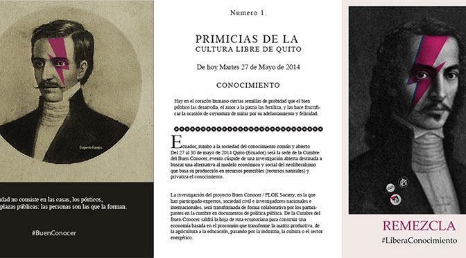

FLOK Society project
In November 2013 I moved to Quito, Ecuador in order to join the researchers' group of FLOK Society, a research-activist project with the aim of developing from the bottom up a set of public policy proposals for the transformation of Ecuador into a society and an economy based on the principles of the Commons, of free software, of peer-to-peer and of free access to knowledge.

With the support of the Ecuadorian Government and the active participation of an international network of academics, hackers, practitioners, activists and social movements, the FLOK project developed in less than a year a set of sixteen policy papers spanning the spheres of traditional and ancestral knowledge, education, science, culture, biodiversity, agriculture, manufacturing, energy, software, hardware, Internet connectivity, open data and open government, the role of civil society and the legislative/institutional framework for the social and solidary economy. My role was that of coordinator of the research in the areas of biodiversity, agriculture, distributed manufacturing and distributed energy, which resulted in the following policy papers:
- policy paper on biodiversity [english][spanish]
- policy paper on open/sustainable agriculture [english][spanish]
- policy paper on distributed manufacturing [english][spanish]
- policy paper on distributed energy [english][spanish]
Here's a short video about the project and its goals:
To learn more about the FLOK Society project, vist the FLOK website or read this interview I gave in March 2014.
¬¬¬¬¬¬¬¬¬¬¬¬¬¬¬¬